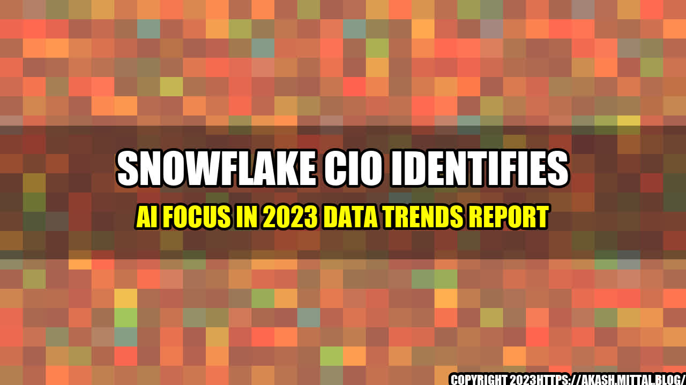

Why AI will be a game changer for businesses by 2023

Maya, a young entrepreneur, started her e-commerce business with a motto of "Customer is king." She wanted to ensure that each customer had a personalized experience while shopping on her platform. However, as the business grew, it became difficult for the small team to handle the vast amount of customer data they were generating.
One day, Maya's friend suggested implementing AI to help identify customer preferences and provide personalized recommendations. With the new AI software in place, Maya's e-commerce platform saw a 35% increase in sales in just six months, thanks to the AI-generated personalized recommendations.
Maya's story is just one of many examples of how AI is being embraced by businesses of all sizes to boost efficiency, drive revenue growth, and provide enhanced customer experiences. As we move into 2023, Snowflake CIOs predict that AI will be one of the most significant technology trends in the world of data.
AI's Impact on Businesses
The use of AI is already transforming several business areas, including marketing, finance, and customer service, to name a few. Here are a few examples of how AI is creating measurable improvements:
- Customer service: AI-powered chatbots can provide 24/7 customer service, reducing wait times and providing quicker resolution times. A study by Juniper Research found that businesses using chatbots could save over $8 billion per year by 2022.
- Marketing: AI helps companies predict market trends and customer behaviors, enabling more targeted campaigns. In fact, a study by Accenture found that businesses using AI in their marketing strategies were seeing a 30% improvement in conversion rates.
- Finance: AI is being used to monitor financial transactions to identify any anomalies or suspicious activities, which can help prevent fraud. Forbes estimates that by 2025, AI could help financial institutions save up to $1 trillion a year just by detecting and preventing fraud.
The Three Key Takeaways from the AI Trends Report
Snowflake's 2023 AI Trends Report highlights the top three AI trends shaping the future of businesses over the next few years, including:
- Conversational AI: More businesses will invest in chatbots, virtual assistants, and voice-enabled devices to improve customer experiences and service.
- Intelligent Automation: AI will be used to automate routine tasks, such as data entry and analysis, freeing up human resources for more complex tasks.
- AI Ethics: As AI becomes increasingly prevalent in businesses, there will be a growing need for ethical considerations in its use. Companies will need to ensure that their AI systems are unbiased and transparent, protecting against discrimination or privacy breaches.
Practical Tips for Businesses to Implement AI
If your business is ready to embrace AI, here are a few practical tips to help you get started:
- Start small: Don't try to implement AI across the entire company in one go. Start with a small project and build from there.
- Identify key challenges: Identify areas of your business that could benefit from AI, whether that's customer service or supply chain management.
- Collaborate with a vendor: Partner with a vendor who has experience in AI to help you implement it effectively and efficiently.
- Monitor and learn: As with any new technology, it's essential to monitor the results and learn from them. Use the data generated by AI to improve your processes and services continually.
Conclusion
AI is rapidly emerging as a game-changer for businesses that want to stay ahead of the competition. With various AI tools and applications, businesses can drive innovation, increase revenues, and provide enhanced customer experiences. Understanding the key trends in AI, such as conversational AI, intelligent automation, and ethical considerations, can help businesses leverage this technology to its full potential.
Whether you're a small start-up or a large corporation, it's essential to embrace AI and unlock its full potential. With the right investment, collaboration, and a data-driven approach, you can harness the power of AI to drive your business towards growth and success.
Reference URLs and Hashtags
- Keywords: AI, Snowflake CIO, data trends report
- Category: Technology
- Reference URLs:
- https://venturebeat.com/2020/11/12/snowflake-cios-2023-data-trends-report-touts-ai-as-major-focus/
- https://www.snowflake.com/
- Hashtags: #AI #SnowflakeCIO #DataTrends #ConversationalAI #IntelligentAutomation #AIEthics #Technology
Curated by Team Akash.Mittal.Blog
Share on Twitter Share on LinkedIn